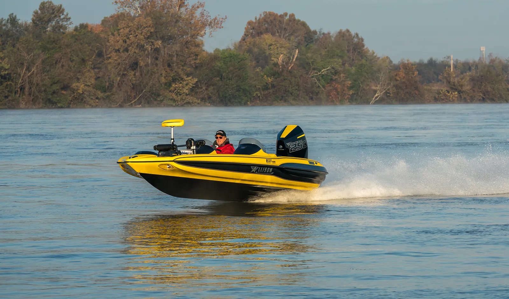
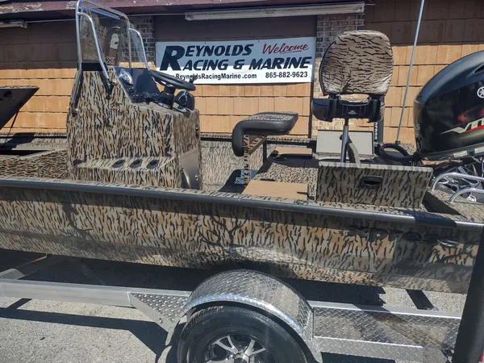
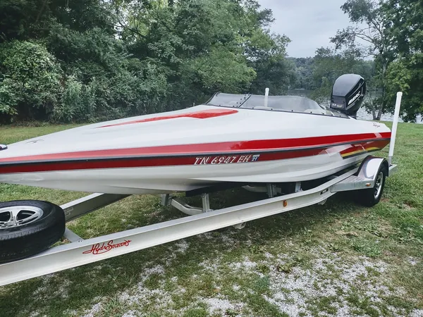
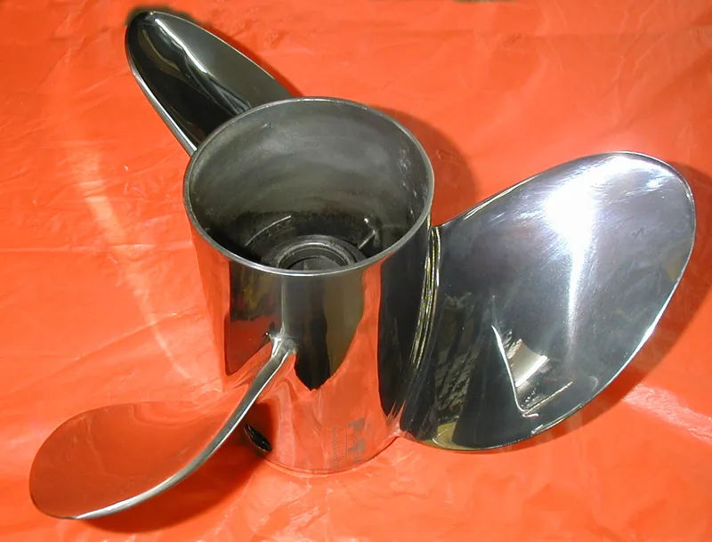
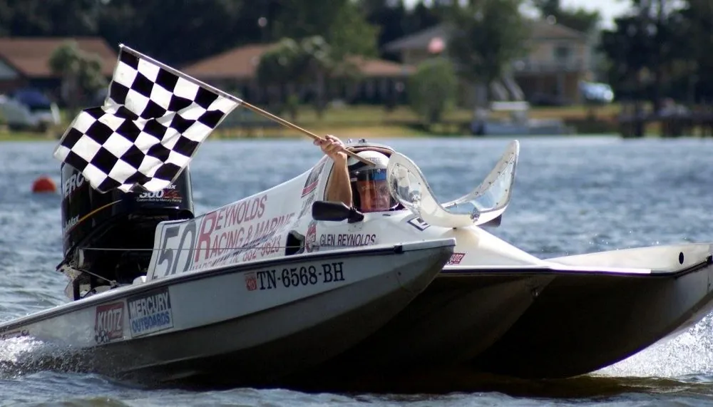
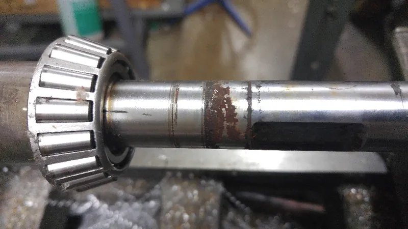
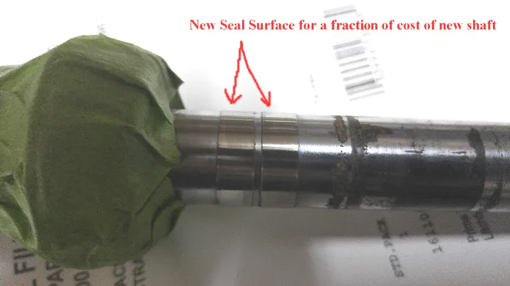
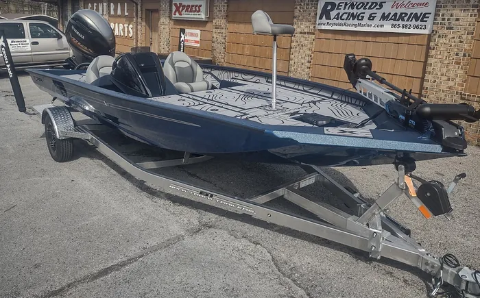

Harriman, Tennessee
Where quality, performance and service count
New Xpress boats, used boats and Mercury outboards on South Roane Street. Glenn specializes in propping and setup of all types of boats, with an emphasis on safety and a boat that’s fun to drive.
On the lot right now
All prices include the 3½% cash discount. Yard boat covers are not included in the price of the boat.
-

2023Xpress H190B Camo Bay
Yamaha 115 SHO
Baystar hydraulic steering, Garmin 63CV, 12" HD jack plate, swing tongue, aluminum wheels and spare.
$33,900
All new boats -

Used2004HydroStream Vegas
225 Mercury ProMax
Only 30 hours since rebuild. Stereo, ski pole, 2016 aluminum Load Rite trailer and cover included.
All used boats and motors -
Xpress Boats · new, in stock
2026 Xpress H17
- Engine
- Yamaha VF90LB
- Trailer
- Xpress AX17
Grand total$29,991.96
MSRP with options $37,691.96
Five more new Xpress boats
Propped right, not close enough
“I bought a prop and he traded that prop with me 3 times. And yes 3rd time was the charm. RPM right where the need to be, picked up another 6mph.”
Propping and setup is what Glenn does. Signature and Eagle Performance 4 blade props, Mercury Ventera, a rack of used props, and somebody who has run these hulls hard enough to know what the number on the tach should be.
+6 mphSame boat, same motor, the right prop


The racing in the name is real
Glenn started performance boating in the early ’60s. In his own bio:
- Over 115 mphTop bass boat record
- Almost 130 mphOutboard ski boat V bottom record
- 2009ODBA High Point World Championship, Green Stock Class, after winning 5 races
Records as stated on Glenn’s own bio page. The 2009 title is from the Reynolds Racing race report.
Fixed, not just replaced
A worn seal surface on a driveshaft usually means a new driveshaft. Here it means a repair, for a fraction of the price. Same idea with fuel and air injectors: they flow, test and clean them in house. They make some parts themselves, like Reynolds Racing custom pistons for the 200 to 300XS Mercury.


What people say about Glenn
“Glenn took the time to look over my boat and explain in depth what is going on. Great service and appreciated someone with his experience that would give me the time like that just stopping by. Thanks Glenn.”
“Mr Glenn has forgotten more about outboards than most people will ever know...”
“I just had Glenn build me a custom Bullet trailer, it was beyond perfect . He personally and his associate delivered to me in South Carolina .”
“It is honestly like an entire different boat. ... Also this fixed the water coming over the back of the boat every time I stopped.”
We buy used Allison and Bullet boats
Tell Glenn the hull, the motor and the year. He’ll tell you what it’s worth to him.

Come see them
I-40 Exit 347, go right onto 27N, 1 mile on right.
1019 South Roane StreetHarriman, TN 37748 865-882-9623
Mon to Fri 8:30 to 5:00. Saturday 9:00 to noon. Ask for Glenn.